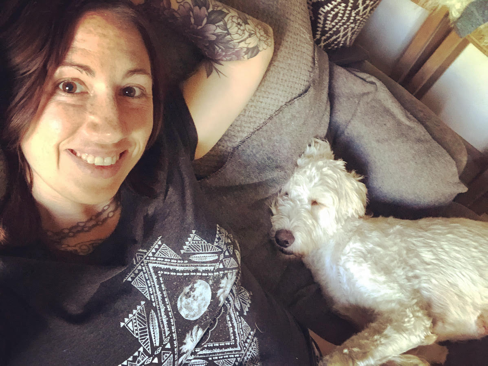

Hi, I’m Megan! I am a Wildlife Biologist turned Software Engineer. Yes, you read that right. I spent 12 years watching and listening to whales, dolphins, and sea turtles throughout the world for the offshore Oil & Gas and Renewables industries. That’s right – I speak whale. And at this point, basically I’m a pirate – but perhaps more of a cartoon pirate.
Now that I’m officially land locked, I'm a full-time student studying Full Stack Software Development. I am currently enrolled at Springboard, focused on building a skill set in JavaScript, AJAX, jQuery, Python, Flask, SQL, PostgreSQL, Node, Express, React JS and Redux. Welcome to my showcase of all these new skills!
What am I doing when I’m not being a pirate or coding? I love book-devouring, bendy-stretchy exercise, handstands (aka pouring everything out of your brain), and I’m also full-time rescue dog-mom. I have a wonderful labradoodle named Banana Waffles and I spend more time than I should just telling her how cute she is.
But to end things on a more serious note, because occasionally that is called for… I have always believed that bettering yourself is the first step in bettering the world. It’s a key concept that has never let me down. Software Development is a daily chance to do just that. Now how can I help you better the world?